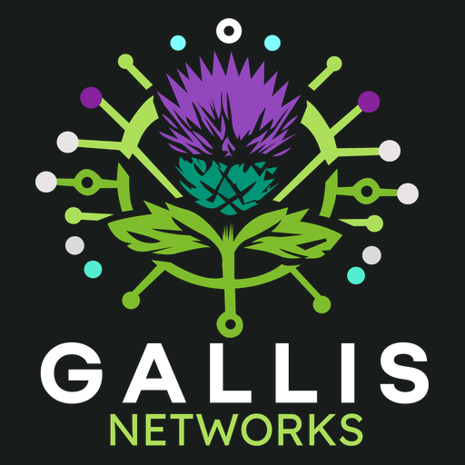

From the farmhouse to the office, a network should support the way you use the space. Start with coverage, connected devices and the buildings involved.
Wi-Fi & coverage
Work through dead spots, busy areas and the devices that need a dependable connection.
Building-to-building links
Explore how to connect a workshop, barn or separate office, taking distance and the surroundings into account.
Network design
Bring wired and wireless connections together in a plan that can develop with your needs.
Give customers a clear introduction to what you do and an easy way to get in touch. A new website or a considered update can make the next step easier.
New websites
Present your business, services and contact information in a clear, mobile-friendly design.
Existing website updates
Refresh content, improve navigation and tidy the parts of your website that are getting in the way.
Customer enquiries
Build a straightforward route from someone discovering your business to telling you what they need.
A working farm, an independent business or a place to call home. Tell us what you want to connect, protect or improve.
01
FARMS & RURAL BUSINESSES
Bring your business online.
From a clearer online presence to the connections behind your operation. Explore websites, farm networks and connected technology that fit your business.
You don’t need a large project to make a useful change. Start with a simple website, clearer business information or a specific update you have been putting off.
Wi-Fi, cameras and smart devices all rely on a sensible foundation. Talk to us about your property, what you already use and what you would like to improve.
Every project is quoted for its agreed scope. No fixed package price, booking or on-site availability is assumed.
FARMS & RURAL PROPERTIES
Choose the approach. Then the equipment.
The right option depends on distances, power, buildings and how much downtime you can tolerate.
Improve what you have.
Look at configuration, placement and compatible additions first. Reuse sound equipment where it meets the requirement.
Trade-off: older equipment may limit coverage, updates or future expansion.
Build a managed system.
Plan equipment that can be monitored and administered consistently, with appropriate separation and recovery arrangements.
Trade-off: greater upfront investment and ongoing maintenance responsibilities.
Upgrade in stages.
Start with the connection or building that matters most, then expand against an agreed plan as your budget allows.
Trade-off: later stages depend on suitable foundations and future equipment availability.
Wireless links, mesh and cabling suit different situations. A Raspberry Pi can support useful applications, but is not a substitute for suitable network equipment.
FARM RECORDS / CONNECTED THINKING
Your farm’s information. A clearer picture.
Explore farmOS as a way to bring farm planning and records together, with a practical approach to connecting the information you already collect.
farmOS is free, open-source farm-management software. Its API provides a route for integrations; device compatibility and the work needed must be assessed for each project.
Start with your records. Identify what you record now, who uses it and what would make daily work easier.
Explore useful connections. Assess importing existing information and data from compatible sensors, with suitable checks before it becomes a farm record.
Plan for continuity. Agree hosting, access, backups, updates and what happens when the connection is unavailable.
Start with a suitability discussion. No farmOS installation or live integration is included in this website. Hosting, setup and ongoing support may involve costs, even though the software is free.
Resilient networking. From information to useful records
01 / COLLECT
Information from the farm
People & observationsExisting recordsCompatible sensors
02 / CHECK
A planned connection
Check access, format and data quality. Agree what is imported and how.
03 / USE
farmOS
Farm records and planning, shaped around the way you work.
Illustrative workflow — not a live system or a farmOS screen. Sensor connections and imports depend on the agreed implementation.
farmOS is an independent open-source project. Gallis Networks is not presented as an official partner or endorsed provider.
HOW QUOTES WORK
A clear scope. An agreed next step.
01 / TELL US
Describe the problem.
Tell us about the property or business, what you already use and what you want to change. A budget range is useful if you have one.
02 / DISCUSS
Work through the requirements.
We discuss suitability, ask for any missing information and identify whether a call or further assessment is needed.
03 / QUOTE
See what is included.
Your written quote sets out scope, deliverables, exclusions, costs and any ongoing charges. You can ask questions before deciding.
04 / AGREE
Choose an available date.
Once the work and terms are agreed, we confirm a suitable date or delivery schedule. An enquiry alone does not reserve a booking.
Hereford and beyond
Working with customers in Hereford and the surrounding area, with remote website and technology work across the UK. Scope, suitability and availability are agreed before a booking is made.
You don’t need to know the technical answer before getting in touch.
Which areas do you cover?
Gallis Networks focuses on Hereford and the surrounding area, with remote support and website work across the UK. Any site visit depends on the work required and agreed availability.
Can I start with one part of a larger project?
Yes. Tell us the wider aim and the immediate priority. We can discuss a sensible starting point and how it should fit with any later work.
Do you work with homes as well as businesses?
Enquiries are welcome from farms, rural properties, residential customers and other businesses. Include the type of property or business so we can understand the setting.
What if I already have equipment or a website?
Tell us what you use now and what you want to improve. Existing equipment, website platforms and access arrangements help determine which options are practical.
How are the scope and cost agreed?
Once enquiries open, start with the enquiry form. We’ll discuss the requirements, any further information needed and the delivery arrangements. Scope, costs and timing are agreed before work begins.
05 / FOLLOW ALONG
Ideas. Updates. Gallis Networks.
Find us on TikTok, Instagram, Facebook, X and Bluesky for connected homes, rural technology and business updates.
Loading a feed connects to that social platform, which may use cookies and process browsing information. You can also open the profile directly. About social embeds
06 / LET’S TALK
What would you like to work on?
Tell us what you have in mind. Whether it’s a new website, a connection that needs improving or a wider technology project, we’ll discuss a practical way forward.
A useful starting point
Include the property or business involved, the equipment or website you already have, and what you would like to change.
Please leave out passwords, access codes and sensitive security details.


05 / FOLLOW ALONG
Ideas. Updates.
Gallis Networks.
Find us on TikTok, Instagram, Facebook, X and Bluesky for connected homes, rural technology and business updates.
TikTok
↗@gallisnetworks

Explore our posts on TikTok.
Instagram
↗@_gallis_networks_
Explore our posts on Instagram.
Facebook
↗Gallis Networks
Explore our posts on Facebook.
X
↗@GallisNetworks
Explore our posts on X.
Bluesky
↗@gallisnetworks.bsky.social
Explore our posts on Bluesky.
Loading a feed connects to that social platform, which may use cookies and process browsing information. You can also open the profile directly. About social embeds